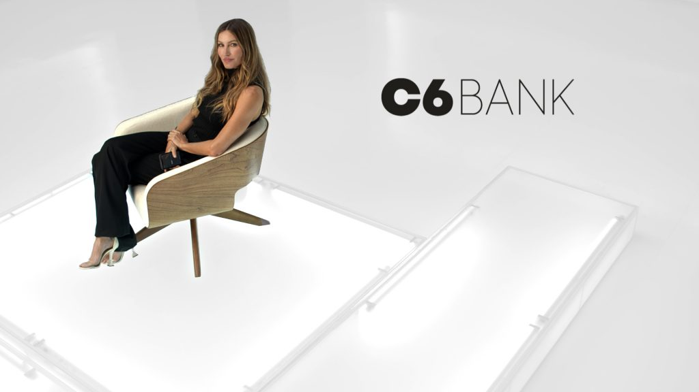
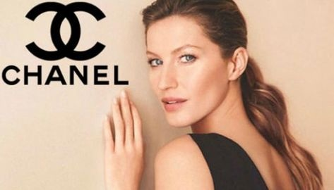
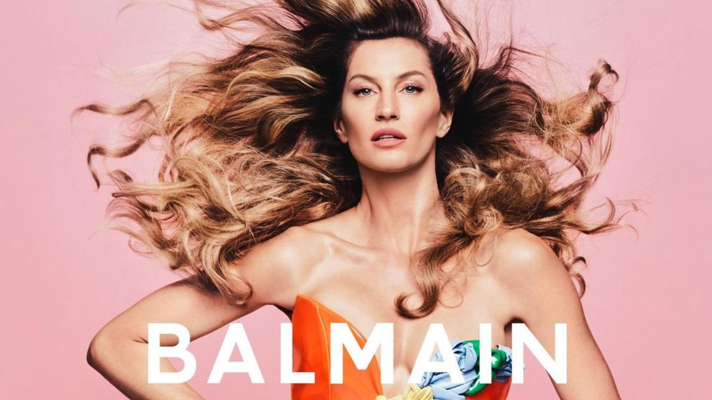

C6 Bank e Gisele Bündchen anunciam a renovação do contrato de publicidade até 2025. Nos próximos meses, a modelo e empresária deve estrelar novos materiais publicitários com destaque para mensagens relacionadas à inovação, ao conceito de banco completo, com ênfase no amplo portfólio, nos benefícios exclusivos oferecidos aos clientes e nos diferenciais de atendimento e de serviço.
Gisele Bündchen cruzou o tapete vermelho do Met Gala 2023 com um vestido branco criado por Karl Lagerfeld (designer que é o tema da festa esse ano) para a coleção de alta-costura primavera-verão 2007 da Chanel.
Gisele Bündchen é o mais novo rosto da Balmain para a campanha de primavera de 2024
